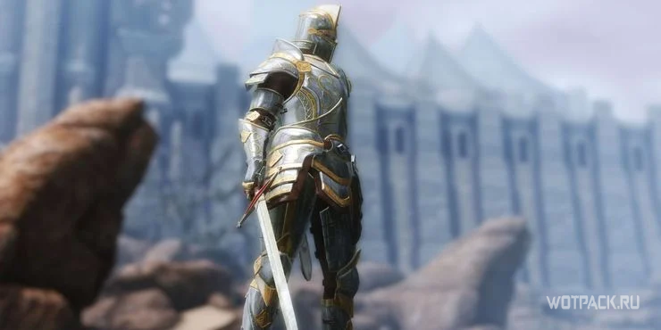

Гайд - ТОП-15 лучших билдов для Skyrim
В Скайриме игрок может свободно путешествовать по открытому миру. Он исследует новые области, выполняет задания и развивает персонажа. Если правильно выбрать направление прокачки, то можно захватывать целые города, тайно подбираться к врагам и из тени стрелять по ним из лука. В этом геймеру и помогут билды.
В Скайриме нет одного способа решения задачи. У игрока есть десятки вариантов прохождения квестов или развития персонажа. Благодаря этому можно раз за разом изучать мир и постоянно открывать что-то новое. К тому же пользователь создает действительно уникального героя, и не только внешне, но и по его умениям.
Особенность пятой части «Древних Свитков» — это гибкость. Каждый навык имеет массу разветвлений. Именно поэтому пользователь может создать или выбрать билд, который соответствует его стилю игры вплоть до мелочей. Рекомендуем попробовать наши готовые подборки способностей и навыков. Они станут ключом к спидрану, помогут освоить новый класс и дадут новичкам возможность ощутить всю прелесть Скайрима без долгого изучения системы прокачки.
- Элементарная ярость
- Палладин
- Двойной кинжал Ассасина
- Магический меч
- Чистый маг
- Некромант
- Воин-призыватель
- Невооруженный каджит
- Крафтер
- Танк-колдун
- Маг разрушения
- Вервольф
- Мастер скимитара
- Стелс лучник
- Ассасин-иллюзионист
ЭЛЕМЕНТАРНАЯ ЯРОСТЬ
- Раса: редгард или орк.
- Основные навыки: владение одноручным оружием, легкая броня.
- Рекомендуемый крик: элементарная ярость.
В Скайриме герой может использовать два вида предметов одновременно, например, одноручные мечи и разные заклинания. Этот навык делает персонажа по-настоящему опасным. Достаточно увеличивать наносимый одной рукой урон — для этого развивайте соответствующую ветвь дерева способностей. Для высокой скорости убийства добавляйте крик «Элементарная ярость», чтобы повысить скорость атак Довакина. Быстрый герой, который владеет двумя мечами — это классический билд, который прекрасно подходит как для спидрана, так и для любого новичка.
ПАЛЛАДИН
- Раса: бретонец.
- Основные навыки: тяжелая броня, владение одноручным оружием, восстановление.
- Рекомендуемые заклинания: излечение от ран, проклятие вампира, проклятие нежити.
Палладин — это один из самых популярных типов героев в РПГ-играх. Он использует гибридный стиль в ближнем бою, и именно это делает его грозным противником.
Бретонцы имеют врожденный расовый бонус: +5 к магическим школам Иллюзии, Восстановления и изменения, а также к способностям «Красноречие» и «Алхимия». Школа Колдовства получает бонус +10, что также немаловажно для будущих сражений. Жители Хай Рока также являются полуэльфами, чем и проясняются их выдающиеся магические способности с точки зрения лора мира. Однако в то же время вторая их половина — человеческая, поэтому лучше придерживаться баланса между развитием магии и боевых навыков. Палладин выдерживает серьезный урон, отлично нападает в ближнем бою и быстро исцеляет друзей.
ДВОЙНОЙ КИНЖАЛ АССАСИНА
- Раса: орк.
- Основные навыки: легкая броня, владение одноручным оружием, красноречие, иллюзия.
- Рекомендуемые заклинания: приглушение шагов, невидимость.
Двойной кинжал — это недооцененный билд, который любят многие старожилы. Некоторые новички уверены, что он лишает персонажа гибкости, присущей другим сборкам. Но на самом деле для поздних стадий игры, на которых и начинаются самые увлекательные приключения, этот билд проявляет себя просто прекрасно.
Орки отлично подходят для Двойного кинжала. Эта раса обладает уникальной способностью «Ярость берсерка», благодаря которой герой может наносить двойной урок в течение минуты. При этом входящие атаки будут слабее в половину. Смертоносности добавляет скрытность. С ее помощью герой может подкрадываться к врагами нападать со спины, умножая свой дамаг еще в два, а то и в три раза.
МАГИЧЕСКИЙ МЕЧ
- Раса: бретонец.
- Основные навыки: броня (легкая или тяжелая), владение одноручным оружием, разрушение, восстановление.
- Рекомендуемые заклинания: излечение от ран, молния, морозный плащ, ледяная буря.
Одна из вариации билда «Палладин», более гибкая в вопросах выбора брони и заклинаний. Этот билд считается универсальным и простым, так как игрок может использовать разные типы оружия и магии. Постепенно, по мере прокачки Довакина, игрок будет открывать для себя новые и новые комбо, поэтому геймплей не надоест еще очень долго.
Билд основывается на умении владеть одноручным мечом и знаниях определенной школы магии. В начале игры лучше использовать «Разрушение», особенно эффективно действует «Пламя» или «Обморожение». Если нужно снизить поступающий урон, то выбирают школы Восстановления и Изменения.
ЧИСТЫЙ МАГ

- Раса: альтмер.
- Основные навыки: изменение, разрушение, восстановление, колдовство, иллюзии.
- Рекомендуемые заклинания: излечение от ран, молния, ледяная буря, вызов ледяного атронаха.
Если игрок хочет сделать вызов самому тебе, то лучший билд для него — чистая магия. У этого метода раскачки кривое обучение, поэтому геймеру придется узнать множество особенностей развития навыков самостоятельно. Также необходимо особое понимание работы бонусов, чар и знание полного пула заклинаний. Однако все эти старания окупаются: на выходе получается персонаж, который превращает врагов в пыль за считанные секунды.
Те, кто хочет получить все преимущества билда, должны выбрать в качестве расы альтмеров. После этого необходимо выбрать школу магии — одну или несколько. Разрушение увеличивает наносимый урон, а Иллюзии эффективны против большого количества врагов. При хорошем развитии магии не потребуется тратить силы на оружие ближнего или дальнего боя. Свой пул маны можно увеличивать за счет зачарований.
НЕКРОМАНТ
- Раса: альтмер.
- Основные навыки: колдовство, разрушение, изменение; если важен ближний бой, то тяжелая броня и владение двуручным мечом.
- Рекомендуемые заклинания: вызов ледяного Атронаха, вызов огненного Атронаха, Ужасный Зомби, Ледяная буря.
В Скайриме нет школы некромантии, но использовать магию мертвых все же можно. По сути перед нами билд Палладина наоборот: персонаж специализируется на еретическом применении заклинаний. Это вариант для тех, кто не любит стандартных героев и хочет немного поиграть «злодеем». Играть предстоит от вызова миньонов и треллов через школу Колдовства. Основной дамаг наносится разрушением, а Изменение выступает в качестве дополнительного магического направления. Не стоит забывать и про полезные зачарования для увеличения запаса маны и эффективности заклинания.
Усилить некроманта можно развивая навыки ближнего боя. Благодаря им персонаж становится настоящим темным рыцарем, который наводит страх на своих врагов. Образ дополнит зачарованная даэдрическая броня.
ВОИН-ПРИЗЫВАТЕЛЬ
- Раса: любая.
- Основные навыки: колдовство, одноручное оружие, легкая броня, стрельба.
- Рекомендуемые заклинания: призванный меч, призванный лук, вызов лорда Дремора.
Большинство игроков воспринимают колдовство как способ вызывать существ из Обливиона. Эти треллы будут сражаться на стороне героя и выполнять за него грязную работу. Однако можно пойти нестандартным путем: создавать особенное оружие.
Призванный меч и лук — это мощные заклинания, которые знакомы игрокам еще по ранней версией игры. С их помощью персонаж создает себе особое снаряжение на одну минуту реального времени. Оно наносит повышенный урон. Также школа Колдовства позволяет призывать лорда Дремора. Он может выполнять просьбы героя. Этот билд один из самых фантастических и мощных для начала и середины игры в Скайрим, но после его стоит усилить другими существами из Обливиона и хорошим зачарованием.
НЕВООРУЖЕННЫЙ КАДЖИТ
- Раса: каджит.
- Основные навыки: тяжелая броня, чары.
- Рекомендуемые зачарования: усиление рукопашного боя, повышение регенерации здоровья, повышение запаса сил.
У каждой расы есть свои уникальные пассивные способности, и Каджиты не являются исключением. Один из их особых навыков — это повышенный урон от атак голыми руками.
Все дело в острых когтях кошкообразных существ: они опаснее простых ударов кулаками. Если на дереве навыков «Тяжелая броня» взять умение «Стальные кулаки«, то каджит станет очень опасным противником. Он будет наносить урон равный рейтингу брони перчаток. Можно дополнить героя криком «Смертный приговор» — он увеличивает силу атаки. Еще один вариант — это даэдрические перчатки с зачарованием «Усиление рукопашного боя», которое можно добыть разобрав Перчатки бойца. С этим билдом можно спокойно уничтожать врагов разного класса — от людей до драконов— не используя никакого оружия. Отличный вариант для тех, кто испробовал уже все и хочет новых ощущений от игры.
КРАФТЕР
- Раса: любая.
- Основные навыки: алхимия, зачарование, кузнечное дело.
Если пользователь не знает за кого играть, то крафтер — неплохой выбор. Он создает оружие и броню, а после прокачки героя появляется возможность ковать уникальное снаряжение. Крафт достаточно спокойная деятельность, однако алхимия и зачарование на высоком уровне мастерства позволяют создавать предметы, которые превратят Довакина в машину для уничтожения противников.
Крафтер может давать оружию и броне особые модификаторы, например повышенный урон или большее здоровье для самого персонажа. Благодаря кузнечному делу игрок сможет создать любой неквестовый предмет, включая даэдрические комплекты.
Алхимия недооценена многими фанатами Скайрима. С ней герой может создавать зелья, которые дают временные бонусы. Грамотное применение делает персонажа почти непобедимым. Кроме того, их можно сочетать с разными стилями боя.
ТАНК-КОЛДУН
- Раса: бретонцец.
- Основные навыки: блокирование, колдовство, тяжелая броня.
- Рекомендуемые заклинания: призванный меч, вызов лорда Дремора.
Блокировка ударов в Скайриме — забавная техника, но маловостребованная. При наличии хорошей брони в ней нет нужды. Однако в дальнейшем навык пригодится для сражения с серьезными врагами. Он позволит поглощать урон от чужих ударов, словно его и не существовало.
В отличие от большинства билдов для танков, в Скайриме магия в качестве вторичного навыка может добавить силы герою. При этом опыта и очков навыков будет достаточно на все ветки развития. После прокачки нужно просто вызвать лорда Дремору, и он отвлечет внимание врагов на себя. К тому же он наносит значительный урон. После этого персонаж может бросаться в бой и разить всех одноручным мечом. Щит будет хорошим помощников в таких сражениях: он отлично гасит урон.
МАГ РАЗРУШЕНИЯ
- Раса: альтмер.
- Основные навыки: легкая и тяжелая броня, разрушение, изменение.
- Рекомендуемые заклинания: огненный шар, удар молнией, гроза, ледяная буря.
Школа магии, которая обучает разрушению, все еще является одной из самых привлекательных для всех игроков. Она дает Довакину мощные заклинания и отличные идеи для билдов. Благодаря «Огненному Шторму» герой может вызывать настоящую бурю пламени, которая легко повергнет врагов в ужас и сотрет их с карты. Правда это заклинание забирает много маны, но есть хитрость: наденьте зачарованные предметы. После этого персонаж легко убьет дракона огненными шарами или ударами молний, при этом абсолютно не тратя свой запас магических сил.
По сути это один из простейших билдов в Скайриме, который построен на двух ключевых навыках: Разрушении и Зачаровании. При этом магом играть не так просто, как кажется на первый взгдяд, поэтому ожидать изи-гейма не стоит. Использовать этот билд для спидрана также не рекомендуется.
ВЕРВОЛЬФ
- Раса: любая.
- Необходимый предмет: кольцо Хирсина.
- Tотем: тотем ледяных братьев (вой стаи).
- Преимущества: неразборчивость в еде, тотем Луны, звериная сила.
После прохождения линии квестов «Соратники» герой получит предложение стать оборотнем. При правильном развитии эта способность может дать очень много полезных навыков и невероятных способностей. Например, у этого билда самые мощные атаки в ближнем бою.
В DLC Dawnguard появилась новая ветка навыков. Она доступна только оборотням. Развитие героя происходит при поедании тел павших противников. При правильном выборе способностей Вервольф получит сильную пассивную регенерацию, повышенный урон а также сможет призывать на помощь волков. Благодаря кольцу Хирсина персонаж получит право на бесконечное число превращений в оборотня в сутки без серьезных штрафов.
МАСТЕР СКИМИТАРА
- Раса: редгард.
- Основные навыки: владение одноручным оружием, легкая броня, разрушение.
- Рекомендуемые зачарования: повышение регенерации здоровья, повышение регенерации здоровья, повышение запаса сил.
- Рекомендуемые заклинания: цепная молния.
В квесте «Слава Ситису!» в линейке заданий Темного Братства можно найти уникальный скимитар — Порыв Ветра. Он лежит на палубе корабля Императора, которого Довакину предстоит устранить.
Это меч подходит для особого билда. Он наносит большой урон и оглушает любого врага, позволяя наносить быстрые удары по противнику, пока он не придет в себя. Если нет возможности подойти к сопернику и применить холодное оружие, то герой может использовать цепь молний и поразить цели издалека. Благодаря такой сборке герой становится почти неуязвимым.
СТЕЛС ЛУЧНИК
- Раса: любая.
- Основные навыки: стрельба,, скрытность, иллюзия, колдовство.
- Рекомендуемые заклинания: призванный лук, приглушение шагов, невидимость, успокоение.
Это известный билд среди поклонников Скайрима. Он сочетает в себе урон от стрельбы из лука с бонусами от скрытности. Далеко не каждый билд может похвастаться такой смертоносностью, однако с ним игра быстро становится простой.
Лучники-стелсеры поначалу не наносят серьезного урона, но им нужно просто дальше развивать ветки навыков скрытности и стрельбы из лука. В отличие от других билдов, этот отличается высочайшим уроном и огромным количеством ваншотов благодаря бонусом от незаметных атак. С помощью заклинания невидимости можно избегать серьезных столкновений с врагами.
Однако у билда есть серьезный недостаток: для выравнивания баланса потребуется время. Это сможет сделать только терпеливй игрок, которому не лень будет собирать стрелы и бегать от противников по всей локации в первые часы игры. Но в итоге герой сможет одним выстрелом убить практически любого врага, и это ощущение могущества стоит всех затраченных усилий.
АССАСИН-ИЛЛЮЗИОНИСТ
- Раса: альтмер.
- Основные навыки: скрытность, владение одноручным оружием, иллюзия.
- Рекомендуемые заклинания: призванный лук, призванный меч, ярость, успокоение, умиротворение, невидимость.
Отчасти билд напоминает лучника-стелсера, но с небольшой разницей: герой сосредоточен на использование кинжалов и заклинаний, а не на стрельбе из лука. Это вариант для тех, кто предпочитает быть невидимкой и входить в ближний бой без необходимости долго целиться.
Кинжалом можно наносить быстрые удары, которые в совокупности дают большое количество урона. Благодаря развитию магической школы иллюзий персонаж может сводить с ума врагов и заставлять их сражаться друг с другом. В итоге часто невидимка уничтожает противников даже не доставая оружия. Во время боя можно нанести смертоносный удар в спину — враг даже ничего не поймет.
Нельзя однозначно сказать, какой билд лучше. В этом вся прелесть РПГ-игр — нет единых методов игры. Каждый выбирает свой путь, шлифует его и ищет нестандартные решения. Мы подобрали для вас только часть возможных билдов. Экспериментируйте, пробуйте разные роли и тогда будет проще выбрать то, что подходит для игры.
Данная статья была взята с сайта wotpack.ru